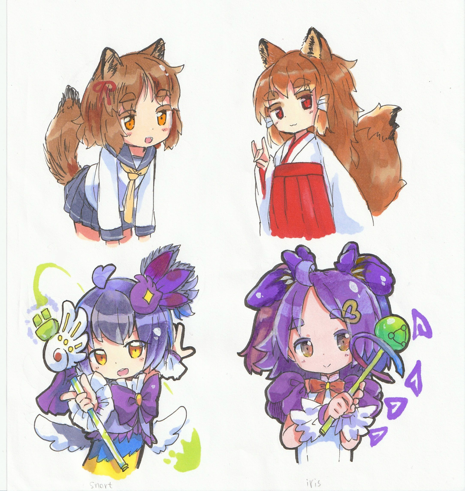
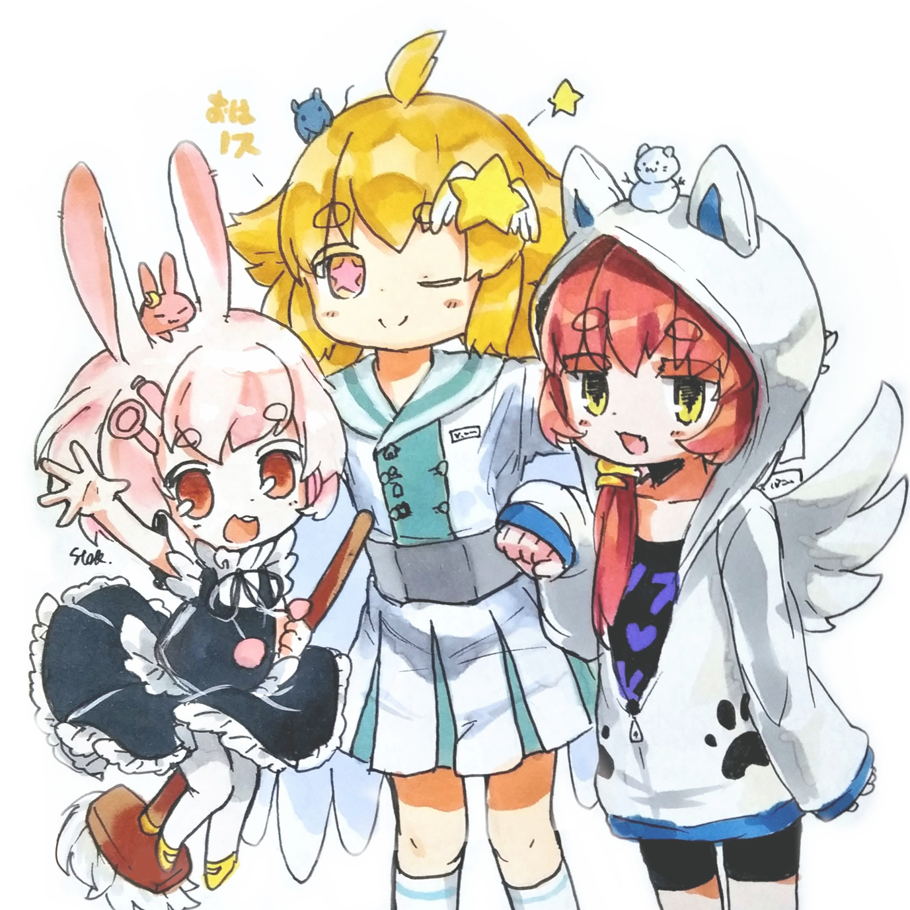
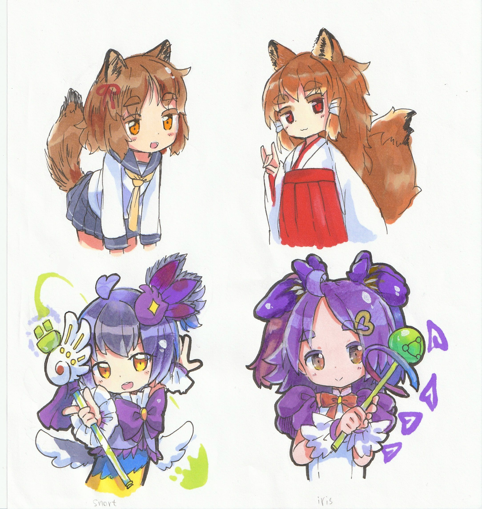
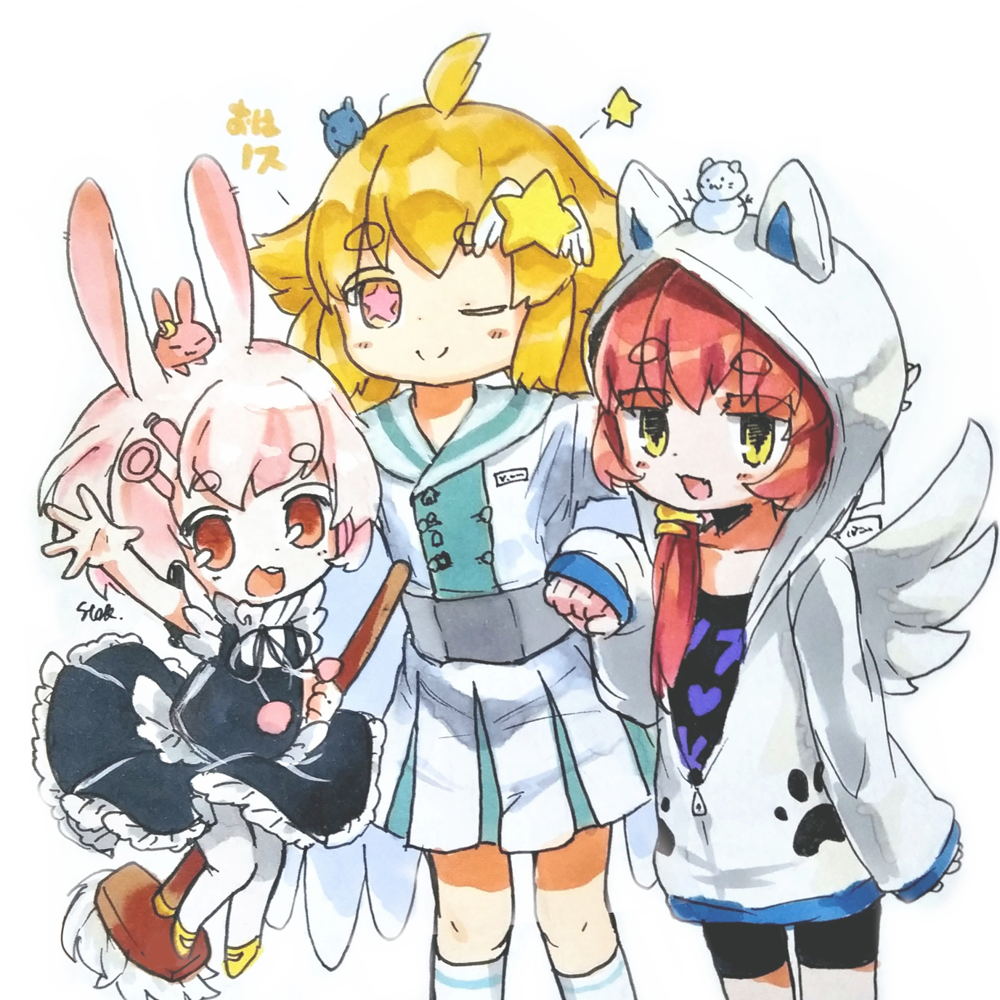
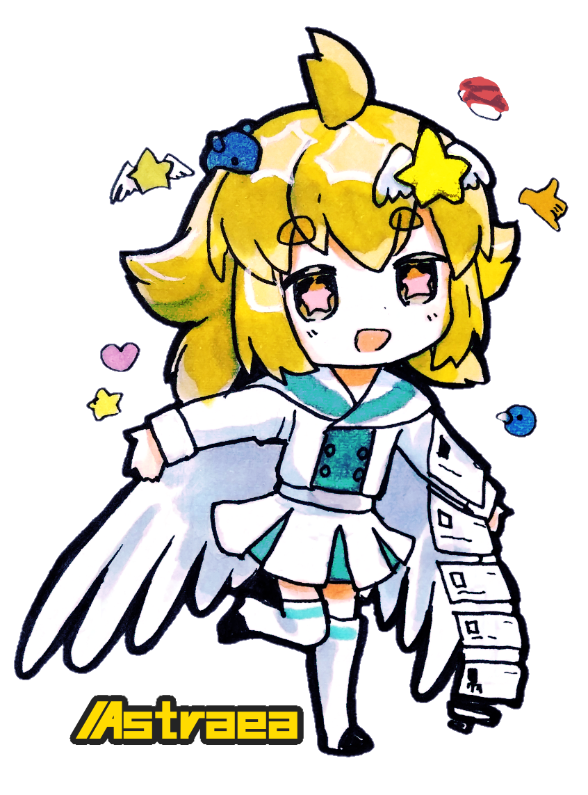
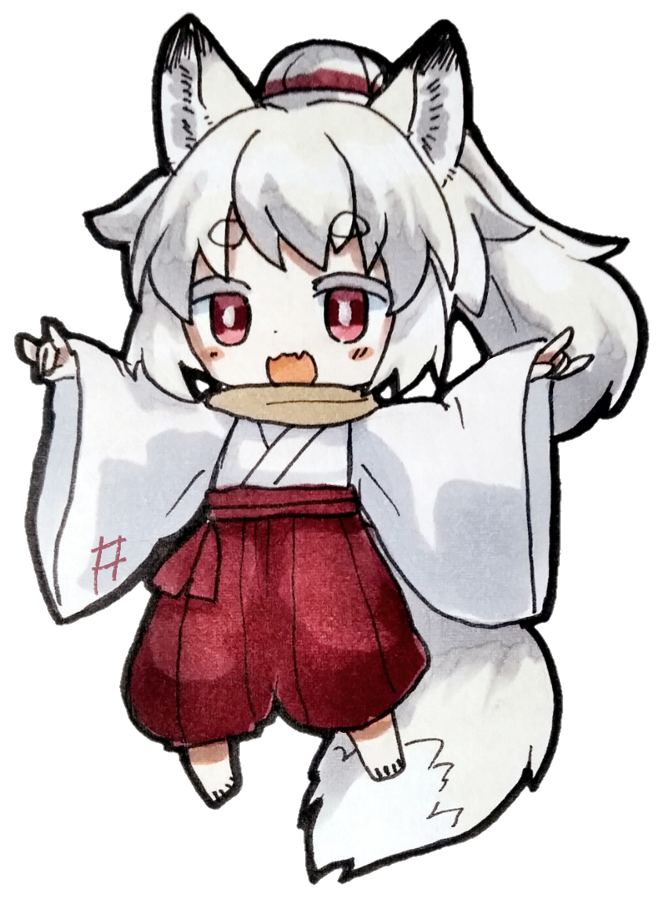
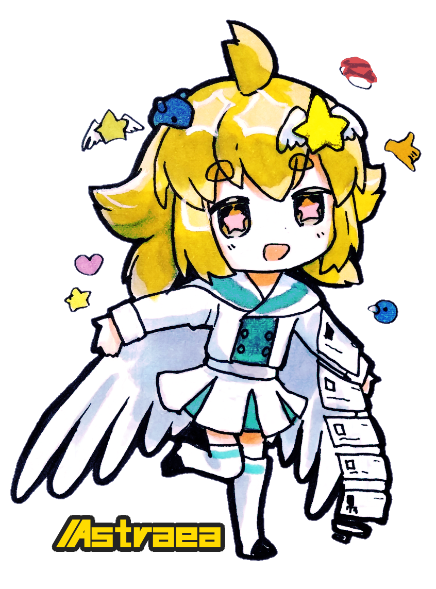
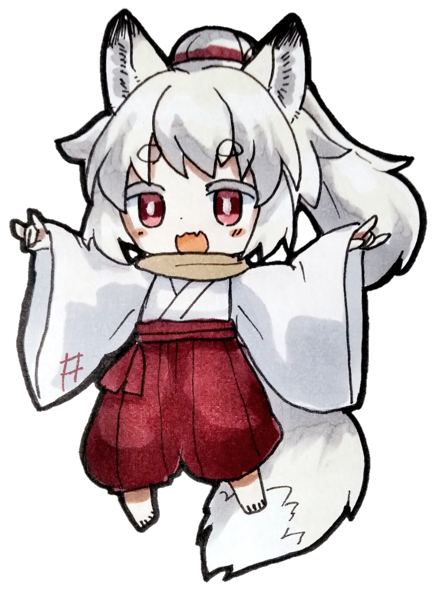

nostrユーザー向けの（誰得）オリジナルフリーイラストを置いておきます。
blueskyでの使用も今のところ同様にokとしています。
・使用例：アイコン・ヘッダーに、何かの挿絵・動画の賑やかしに、カスタム絵文字やバッジの素材などなど…。ご自由にお使いください。
・報告は不要です(あれば自分が嬉しいというだけ) 。
・nostr内は自分が見ているので必ずしも必要ありませんが、他SNSなどで使用する場合は無断使用とかAI生成とかと思われないようにプロフィール欄などに作者名を記述することを推奨します。崇徳とかstok33(ユーザー名)とか
・トリミング、背景通過、ユーザー名、セリフを入れるなど加工はokです(原型さえ留めていれば)。基本的にアナログ直撮りで暗いしノイズとかゴミとか入ってるんでその辺も修正加工okですというかしてください…
・AIに読み込ませること自体はご自由に。ただし悪意を持ってAIに読み込ませたり投稿したりするのは禁止です。
・ここの絵をそのまま使って二次配布や自作発言、勝手に売るなどの行為はおやめください。ないとおもうけど
・スパムや誹謗中傷、社会的に問題のある行為を行ったりする人物やアカウントでの使用を禁じます。
内容が変わることがあるのでその都度従っていただけると幸いです。
🍡-------------------🍡
各種擬人化キャラ等の二次創作歓迎です。
質問があればnostr、bluesky内か、反応がなければTwitterまで連絡ください。
各種SNSへのリンク集はこちら各種作者様へ：勝手に自分のクライアント擬人化しないで、フリーイラストにしないで等ある場合は遠慮なくお申し付けください。消します
誰が何のキャラなのかわからないぞよ→キャラ紹介
白黒絵は塗り絵にどうぞ。塗れたらぜひNostrなどで投稿しよう！


 





以下にカスタム絵文字に使えそうなイラストを載せています。
・絵を右クリックして「画像のリンクをコピー」などから画像URLをコピーします
・クライアントのカスタム絵文字設定画面でURL欄に↑でコピーしたURLを貼り付けます(クライアントによって操作は異なります)
・nameや名前という欄にお好きな文字列を入れて保存します 例：rabijump
・投稿文中に例えば:rabijump:と書いて投稿すると絵文字が表示されるはずです(クライアントによって挙動は異なります、Astraeaは絵文字ピッカーのカスタム欄から選択してください)
上の「普通のイラスト・ファンアート」のイラストもカスタム絵文字にして構いませんが、縦横比が1:1から離れているので表示がおかしくなるかもです。
適宜正方形にトリミングしたりして各種アップローダーに上げ、画像URLを取得してください。

 


